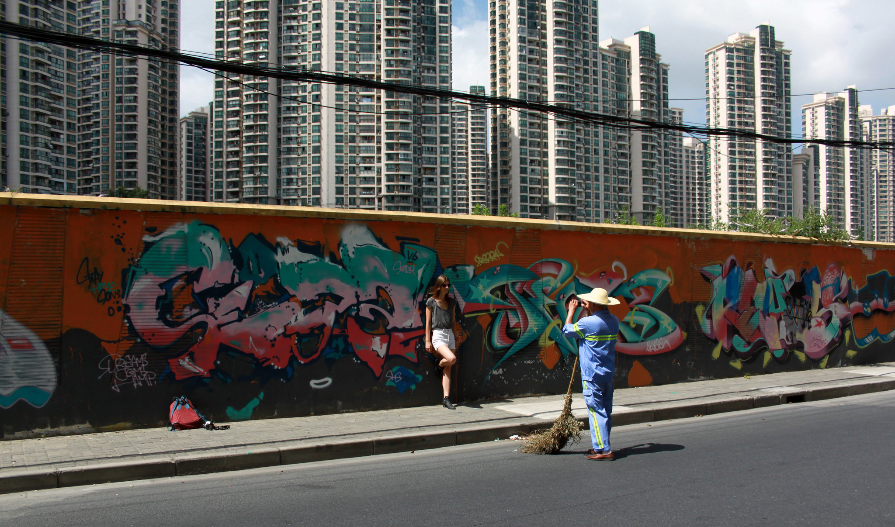
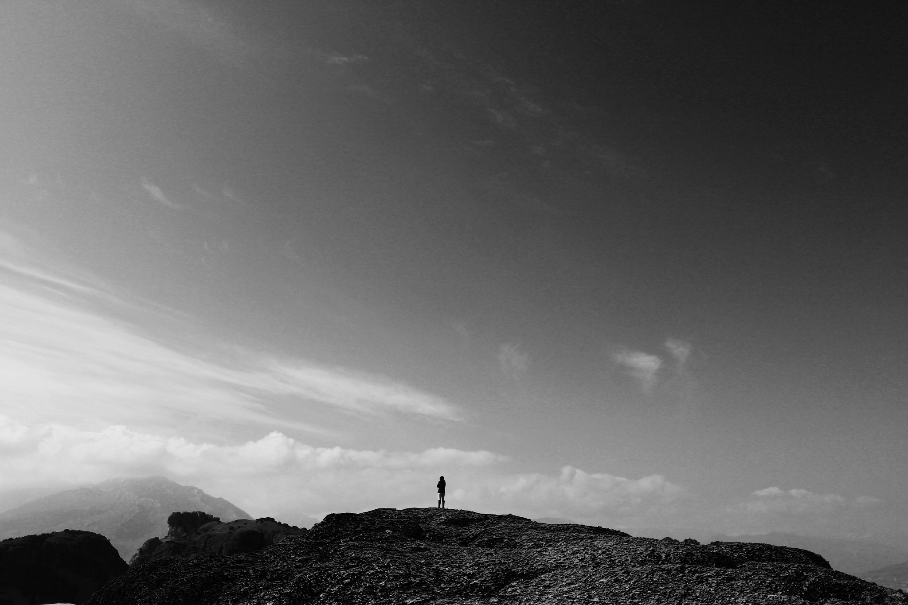

Types of photography: Landscape Candid Portrait
Introduction: I was born in India but grew up mostly in the UK. I studied Engineering at university and then worked on a startup and now consulting. Outside of work and photography, I love to read good books - add me on Goodreads if you want to know what I'm reading! I don't think i'm at the level of the photographers that i'm profiling but jumping at the chance to explain the thinking behind my favourite photos
Origin story: I started taking photos when I was quite young (probably around 11) but got into it more seriously when I began university. I don't remember why I was interested at first, but it's one of those things that I just kept doing especially when I travelled anywhere new. I was really pretty bad at the beginning but improved a lot by copying photos I saw online and going on shoots with friends who were (and still are) much better than me
Favourite photo: I interned in China in 2013 and really developed my skills and my favorite photo is a spur of the moment shot I took in a backstreet in Shanghai. I was wandering around (probably lost) when I saw a tourist excitedly spot the graffiti on the wall and ask the street sweeper to take her photo. There are two contrasts I liked about the photo: 1) The tourist excited by the chance for a great Instagram post and the street sweeper going about his job and 2) the graffiti on the walls with the backdrop of rows and rows of newly built flats. I really enjoy capturing such unscripted moments and when I look at the photo - its so easy for me to jump back into the moment
Second favourite photo: It's really hard for me to choose just one other photo but this one is right up there. In 2015, I went to Greece with a friend and we hiked the mountains in Meteora to various monasteries. It was off season and so there weren't too many other tourists but you would occasionally get large tour groups. The lady in the shot is actually the leader of a Korean tourist group that were standing below her (out of frame). I liked the vastness of the scene as a backdrop against a strong person standing almost defiantly. Again, it wasn't a planned shot, I just took it instinctively reacting to the situation
Equipment used: Canon 5D MK III, 24-105 f4 L II and 70-200 f2.8 L II although both of these photos were taken using a Canon 500D with EF-S18-55mm f/3.5-5.6 (goes to show the camera doesn't matter)
Advice for newbies: I think the hardest part of photography is learning to recognize a good photo. It took me years before I could say what was good and what was not (in my eyes anyway) and I'm still learning to unpick the photos to say why exactly they are good and bad. I think a good way to get started is to copy photographers you like and admire. I personally love Steve McCurry and draw inspiration from his composition of portraits especially
See more of my work: Personal Website